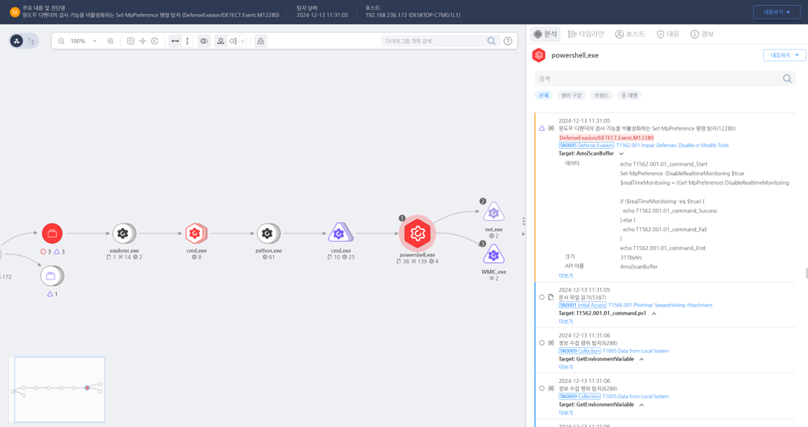

T1562.001.01 윈도우 디펜더 비활성화
D3FEND
MITRE ATT&CK 액션을 기준으로 대응 방안을 작성
Detection
- process_name : powershell.exe AND
- Action : Amsiscan AND
- Amsiscanbuffer : "Set-MpPreference -DisableRealtimeMonitoring $true"
Detection(EDR)

Response
- 이벤트 분석
- Windows 이벤트 로그에서 Windows Defender 서비스 비활성화 관련 이벤트(예: Event ID 5001, 5004)를 확인.
- 디펜더 설정 변경 시도와 관련된 명령어 및 실행된 프로세스를 분석.
- PowerShell 및 레지스트리 관련 비정상적인 활동 로그를 점검.
- 격리 및 조사
- 의심스러운 프로세스를 즉시 종료하고, 해당 시스템을 네트워크에서 격리.
- 비활성화 작업에 사용된 도구(예: PowerShell 스크립트, 외부 바이너리)를 샌드박스 환경에서 분석.
- 공격자가 사용한 사용자 계정을 비활성화하고, 비밀번호 변경 및 권한 검토 진행.
- 정보 차단
- Windows Defender 비활성화를 시도하는 스크립트와 실행 파일을 차단.
- 그룹 정책(GPO)을 통해 Windows Defender 비활성화가 불가능하도록 설정.
Mitigations
- 시스템 하드닝
- 그룹 정책 편집기(GPEDIT)를 사용해 Windows Defender 비활성화 설정 변경을 차단.
- Defender 기능(실시간 보호, 클라우드 보호 등)을 반드시 활성화 상태로 유지하도록 구성.
- 중요 설정은 관리자만 변경 가능하도록 시스템 보호를 강화.
- 접근 통제
- PowerShell 실행 정책을 제한하여 비인가된 스크립트 실행을 방지.
- 비관리자 계정에서 Windows Defender 설정에 접근하지 못하도록 권한 설정.
- 모니터링 및 탐지
- Windows Defender 비활성화 시도 탐지를 위한 SIEM 규칙을 설정하여 실시간 경고 수신.
- 비정상적인 서비스 변경 활동 탐지를 위해 EDR 솔루션 활용.
- 레지스트리 경로(HKLM\SOFTWARE\Policies\Microsoft\Windows Defender) 모니터링을 통해 비활성화 시도를 감지.
Affected Techniques
Action 실행시 함께 영향을 받는 다른 Techniqes
| D3FEND |
| D3-SCA System Call Analysis |